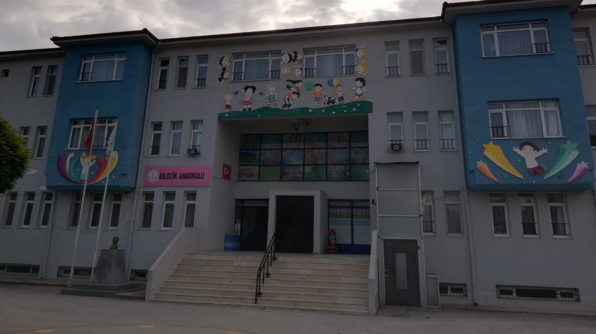
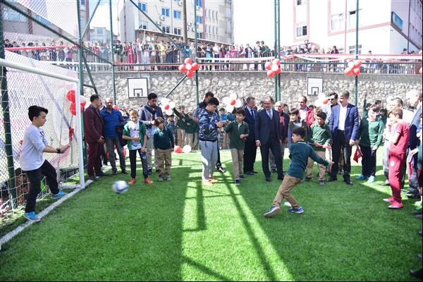
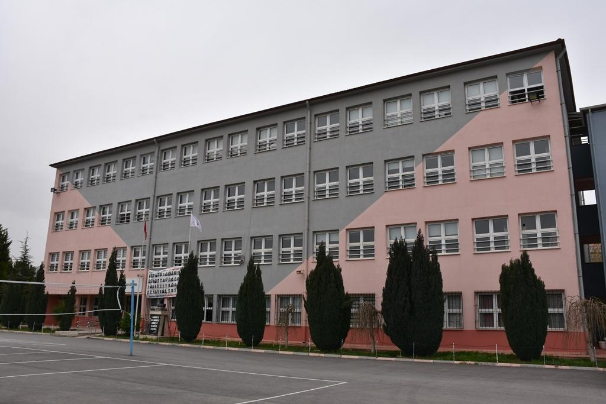
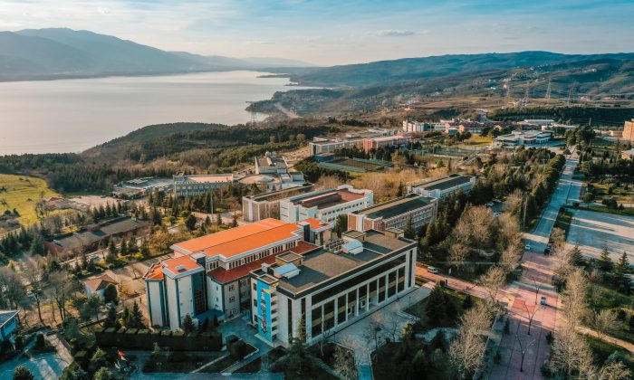

Bilecik Anaokulu
3-7 Yaş Dönemi
Eğitim hayatımın ilk adımları. Hiperaktif geçen yıllar ve hala devam eden dostluklarımın temelleri burada atıldı.
Çocukluğumdan bugüne beni ben yapan okullar.

3-7 Yaş Dönemi
Eğitim hayatımın ilk adımları. Hiperaktif geçen yıllar ve hala devam eden dostluklarımın temelleri burada atıldı.

8 Yıllık Macera
Çocukluğumun en güzel yılları. Teneffüslerde yaptığımız futbol maçları, okul takımıyla kazandığımız şampiyonluklar, anaokulunda başlayan arkadaşlıklarımın devam ettiği çok güzel yıllar.

Lise Yılları
Bir kısmı pandemiye denk gelse de çok fazla şey öğrendiğim, öğretmenlerim ve çocukluk arkadaşlarımla belki de şuanda bulunduğum konumda olmak için çok çalıştığım bir dönem.

Bilgisayar Mühendisliği
1 Sene İstinye Üniversitesi'nde okuduktan sonra yatay geçiş ile geçtiğim üniversite. Bu kararı verdiğim için çok mutluyum. Burada çok güzel arkadaşlıklar edindim ve kendimi gerçekten oldukça geliştirecek fırsatlar buldum. Şuanda 4. sınıf öğrencisiyim, kendi geleceğim için ise mutlu ve umutluyum.